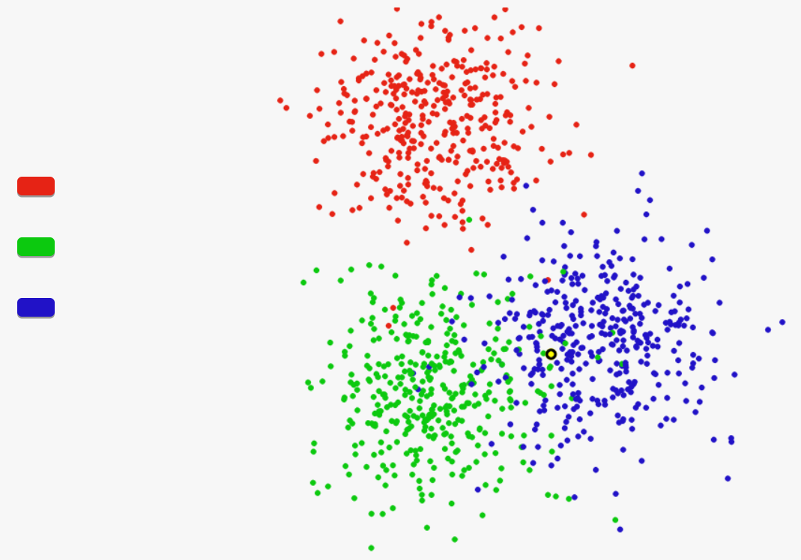
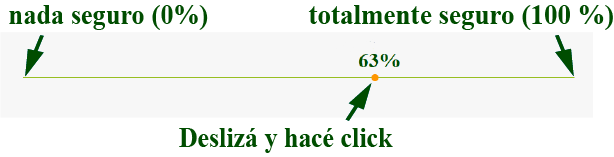

Bienvenido/a. El presente estudio es desarrollado por:
Pablo Barttfeld (Instituto de Investigaciones Psicológicas - CONICET)
Guillermo Solovey (Instituto de Cálculo - UBA - CONICET)
Nicolás Comay (Instituto de Investigaciones Psicológicas - CONICET)
Este experimento dura aproximadamente quince minutos (con una pausa al medio para que descanses, si querés). No es difícil pero requiere toda tu atención. Está compuesto de muchos ensayos, donde aparecen tres o dos nubes de puntos rojos, verdes o azules. En cada ensayo tendrás que responder a dos preguntas:
A cuál nube de puntos pertenece un punto específico.
Cuán seguro/a estás de que tu respuesta a la pregunta anterior sea correcta.
Las siguientes pantallas describen estas tareas de manera detallada.
Instrucciones - leer atentamente
¿DE QUÉ COLOR DEBERÍA SER EL PUNTO AMARILLO? ¿ROJO, VERDE O AZUL?
Podés pensar que estás viendo desde una altura muy elevada a tres grupos de personas con remeras de distinto color.
En cada prueba del experimento vas a ver una imagen como esa. Una de estas personas está oculta por un punto amarillo.
Tu objetivo es decidir, de acuerdo a cómo ves los demás puntos, de qué color tiene la remera la persona que está debajo del punto amarillo: ¿roja, verde o azul? En otras palabras, tu tarea es elegir a cuál grupo de puntos pertenece ese punto específico.
Mirá un ejemplo ilustrativo de como se ven las figuras.

Para decidir, hacé click en el botón a la izquierda de las nubes que coincida con tu elección. Por ejemplo, si decidís que el punto pertenece a la nube verde, entonces presioná el botón verde.
Instrucciones - leer atentamente
La segunda tarea consiste en reportar tu grado de confianza en la elección anterior, es decir, qué tan seguro/a estás de haber elegido la opción correcta.
Para esto tenés que mover con el mouse un pequeño círculo a lo largo de una escala continua.
La escala va de 0% (NADA SEGURO/A, que implica que no confiás en nada en tu decisión de a cuál nube pertenecía el punto amarillo) a 100% (TOTALMENTE SEGURO/A, que implica que confiás absolutamente en tu decisión de a cuál nube pertenecía el punto amarillo). PODÉS USAR VALORES INTERMEDIOS, la idea es que reportes la confianza en tu decisión de la manera más precisa posible.
Una vez elegida una posición en la línea de confianza, hacé click para fijar el valor.
La barra de confianza se ve así:

En algunos ensayos la tarea de elegir a cuál nube pertenece el puntito es fácil y en otros es bastante difícil. Por esto, a veces sentirás que estás eligiendo casi al azar. No está mal si eso pasa, es parte del juego.
En ese caso hacé tu mejor esfuerzo para elegir correctamente y reportá el nivel de confianza que tengas.
Antes de comenzar, te sugerimos que pongas en silencio tu celular ya que necesitamos toda tu atención. El experimento dura aproximadamente 15 minutos, con una pausita al medio para que descanses si querés. Cuando estés listo/a, presioná el botón "comienza".